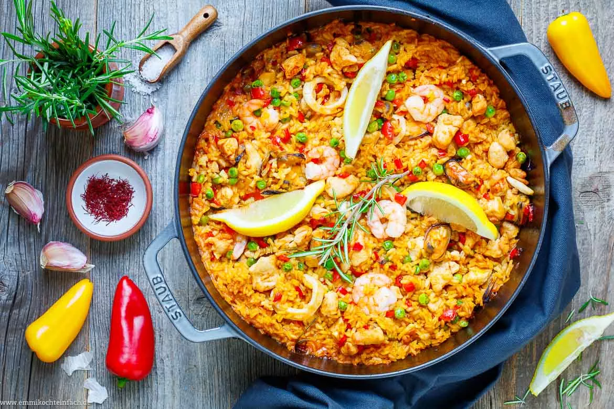

Caprese-Salat
Vorspeisensalat aus Tomaten, Mozzarella und Basilikum.
Rezept anzeigen

Paella
Reisgericht mit Meeresfrüchten, Hühnchen oder Gemüse.
Rezept anzeigen

Moussaka
Auflaufgericht mit Auberginen, Hackfleisch und Béchamelsauce.
Rezept anzeigen